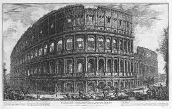

Colosseum, sebuah bangunan besar dan bersejarah yang terletak di Roma, Italia. Bangunan ini di bangun pada masa Kaisar Vespasian. Selesai dibangun pada 80 Masehi, mempunyai (kurang lebih) 50.000 tempat duduk penonton untuk menonton berbagai macam pertunjukan…seperti “gladitorial contest” dan “public spectacles”.
Baca selengkapnyaDiposting oleh Dunia Jelajah Label: Pengetahuan Umum di 07.35 Share

Memorial to King Louis XVI and Queen Marie Antoinette, sculptures by Edme Gaulle and Pierre Petitot. Revolusi Perancis merupakan sebuah masa peralihan politik dan sosial dalam sejarah Perancis. Pada saat itu, kaum demokrat dan para pendukung republikanisme bersatu menjatuhkan sistem pemerintahan monarki (kerajaan) abosolut
Baca selengkapnyaDiposting oleh Dunia Jelajah Label: Pengetahuan Umum di 20.47